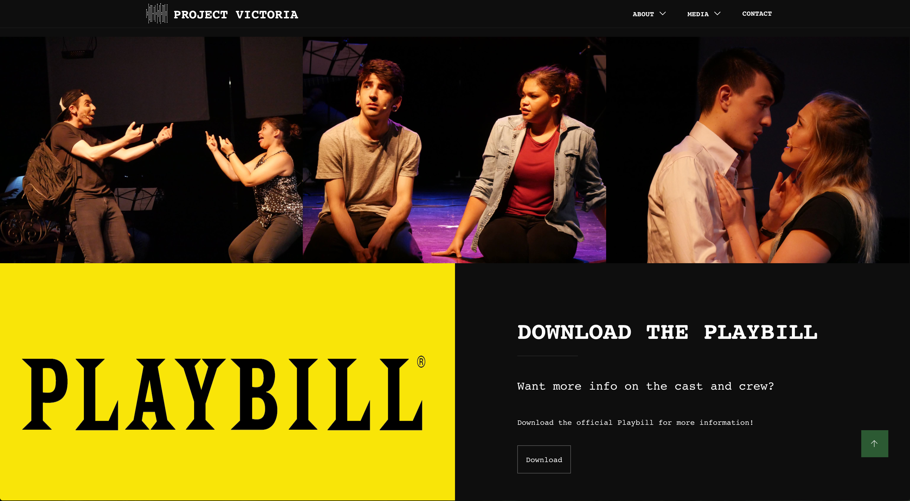
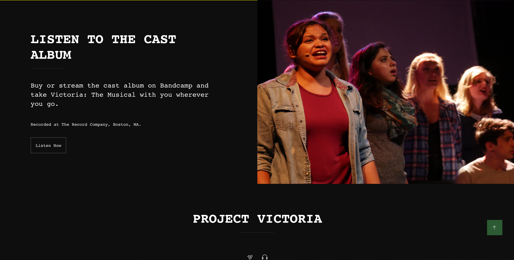
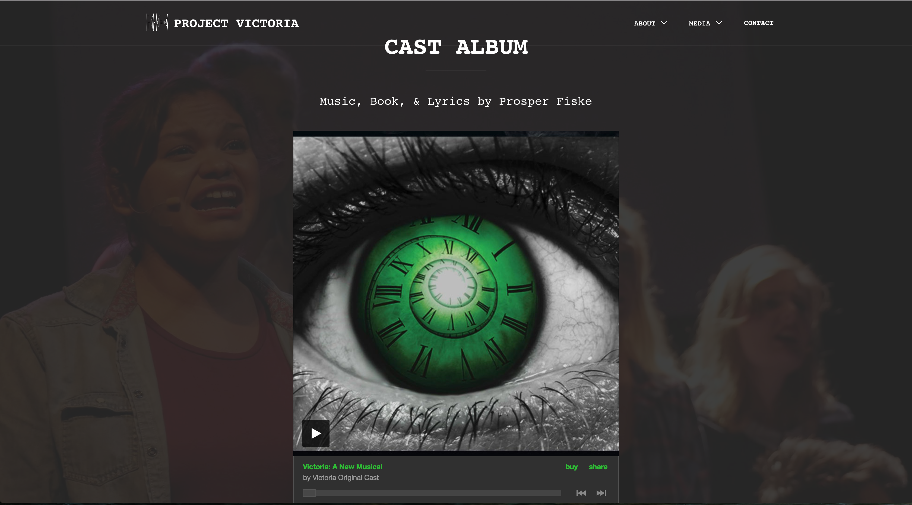
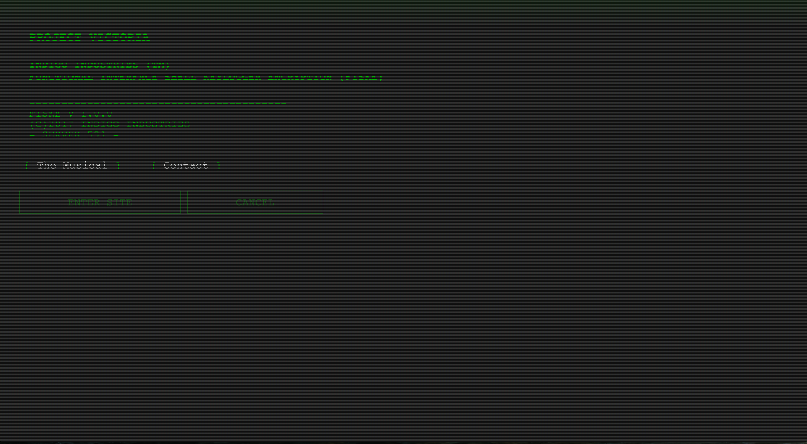

- 
- 
- 
- 
Freelance Musical Theatre Project
Project Victoria: A New Musical tells the story of Jeffery Brown who suffers a stroke that takes away his color vision. 10 years later, he gets involved with an Alzheimer's research drug, Victoria, which allows him to relive his memories and re-experience them again in full color. With this new drug comes new complications, new stories to tell, and new demons to face.
This client website was designed to evoke the feeling of an old school, "Fallout" style terminal, with scripts and animations written to produce old school glitches, scanning lines, and a retro feel. This project was created using HTML, Sass, Javascript, and Gulp.